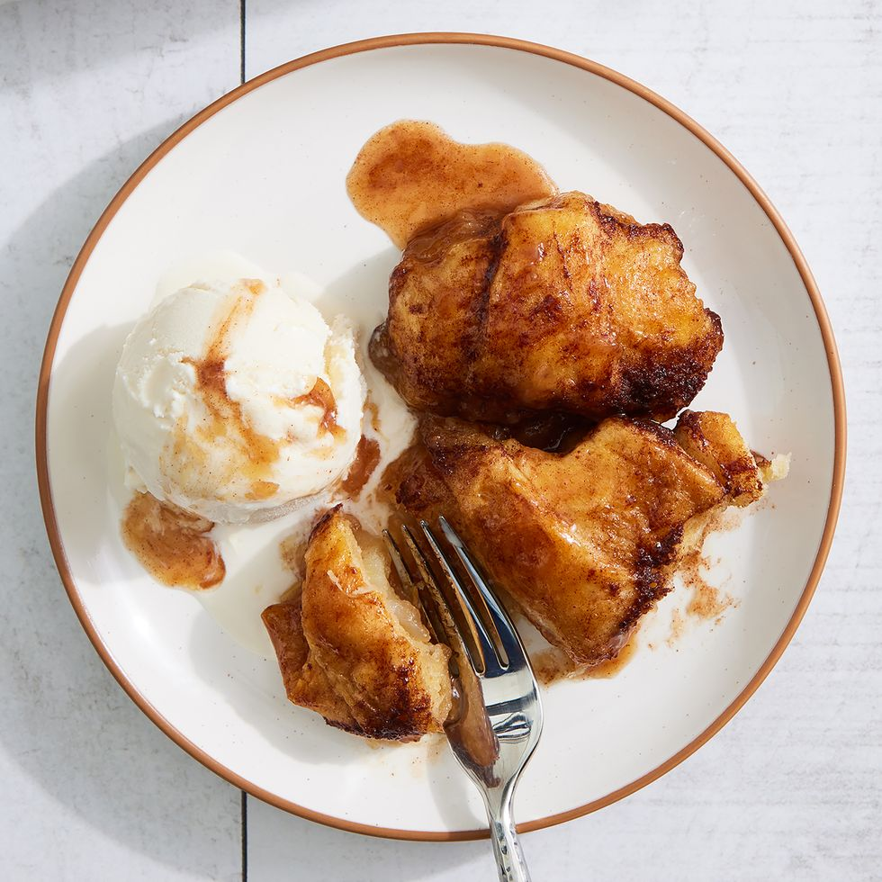

Apple Dumplings

Description
Apple Dumplings are super easy to make and taste great. While you could go through the process of making a whole apple pie, this quick and easy dessert tastes just as good with a scoop of ice cream. Similar to apple pie, you will want to use granny smith apples or other baking apples for the best results. For our dough we will use ready-made crescent dough so that assembly will be easy and we won't have nearly the mess to clean up.
Ingredients
- 2 granny smith apples
- 2 cans crescent dough
- 3/4 c. (1 1/2 sticks) butter
- 1 c. brown sugar
- 1 1/2 tsp. cinnamon
- 1 tsp. pure vanilla extract
- pinch of kosher salt
- 8 oz. lemon-lime soda
Steps
- Preheat oven to 350°F. and grease baking dish with butter.
- Peel and core apples then slice each into eight slices.
- Separate dough into triangles. Roll one apple slice into each triangle and place them into the pan.
- Melt butter in a small saucepan over medium heat. slowly add brown sugar, cinnamon, vanilla, and salt until combined.
- Pour mixture over apples
- Pour soda around dumplings. Avoid pouring soda directly onto dumplings or they may not brown properly.
- Bake for 30 minutes or until golden.
- Serve with ice cream.